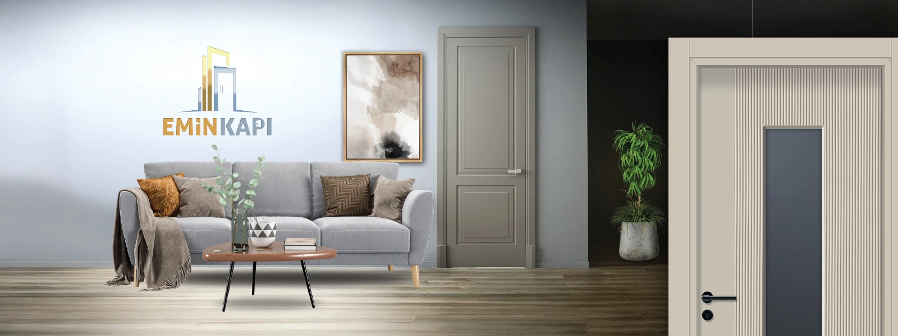
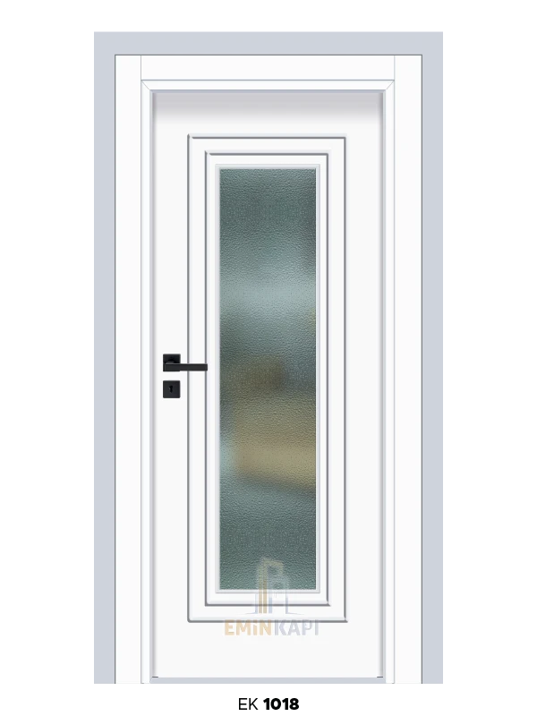
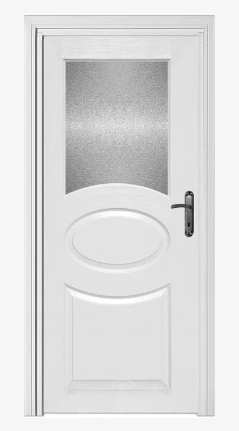
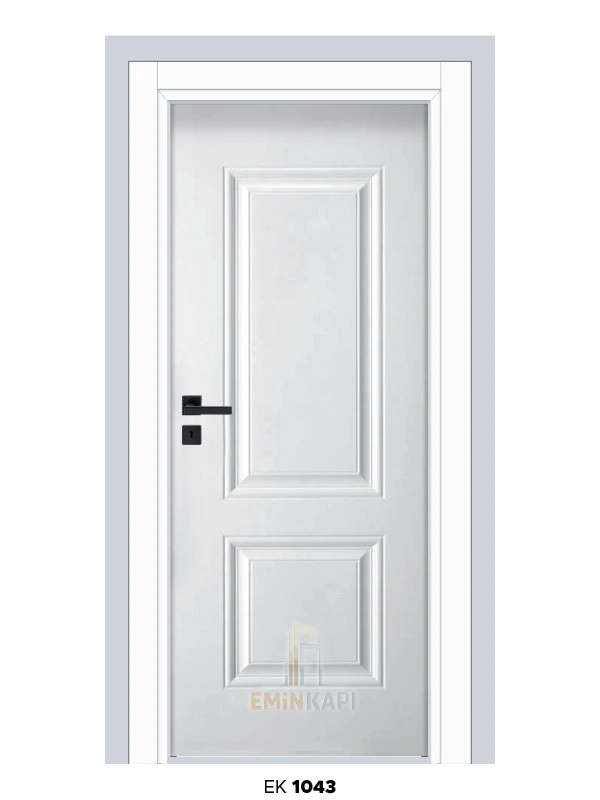
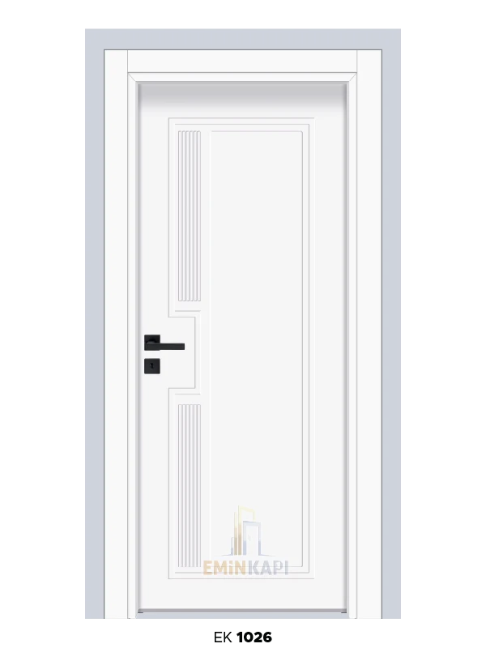

1. Ahşap kaplama
Ceviz, meşe, dişbudak gibi değerli ahşaplar; doğal damar ve sıcak doku. Yatak odası, çalışma odası, kütüphane.
- Gerçek ahşap kaplama
- El işçiliği detaylar
- 20+ yıl ömür hedefi
Osmaniye’de 15 yıllık üst segment tecrübe — malzeme, tasarım ve detay.
Rehber
Lüks kapılar yalnızca bir geçiş noktası değil; evinizin karakterini yansıtan detaylardır. Emin Kapı olarak Osmaniye’de uzun yıllardır üst segment kapı üretiyor ve uyguluyoruz — kaliteli bir kapının mekânın değerini yükselttiğini biliyoruz.
Bu yazıda hangi malzemelerin premium sayıldığını, hangi tasarımların zamansız kaldığını ve hangi detayların fark yarattığını paylaşıyoruz.
Showroom
Öne çıkan görsel ve yanındaki premium yüzeylerden bir seçki — tıklayınca büyür.





“Lüks kapıyı normalden ayıran nedir?” sorusuna cevabımız fiyat etiketi değil: kalite, işçilik ve detay.
Modeller
Showroom’da sık incelenen dört grup.
Ceviz, meşe, dişbudak gibi değerli ahşaplar; doğal damar ve sıcak doku. Yatak odası, çalışma odası, kütüphane.
Premium lake, özel renk ve desen. Parlak veya mat. Salon, yatak ve misafir odası.
Özel cam, bronz/pirinç detaylar; ışığı mekâna taşıyan seçenekler. Salon girişi, yemek odası, ofis.
Klasik tarzın gözdesi; elle oyulmuş desenler, prestijli duruş. Villa, köşk, klasik evler.
Seçim
Modern evde klasik oymalı kapı uyumsuz kalabilir. Önce mekânı görüyor, sonra öneriyoruz.
20–30 yıl kullanım için modaya değil, zamansız tasarıma yatırım yapın.
Ucuz malzeme ile lüks sonuç çıkmaz. Birinci sınıf yüzeylerle çalışıyoruz.
En pahalı kapı bile kötü montajla bozulur. Deneyimli ekip şarttır.
Fiyat
Şeffaf bir çerçeve — net rakam keşif sonrası netleşir.
| Faktör | Etki |
|---|---|
| Malzeme | Gerçek ahşap kaplama en üst band; premium lake orta–yüksek; özel cam işçiliği yüksek segment. |
| Boyut | Standart ölçü baz alınır. Özel ölçü ≈ %20–30; çift kanat yaklaşık 2 kat. |
| Tasarım | Standart model baz; özel tasarım ≈ %30–50; yoğun el işçiliği en üst fiyat bandı. |
Bütçenize uygun üst segment seçenekler sunuyoruz. Ücretsiz keşifle en uygun modeli birlikte belirleriz.
Bakım
| Yüzey | Yapın | Yapmayın |
|---|---|---|
| Ahşap kaplama | Yumuşak kuru bez; yılda 1–2 kez ahşap bakım yağı; doğrudan güneşten koruyun | Su ve sert kimyasal |
| Lake | Nemli bez + kurulama; hafif deterjan; mikrofiber | Aşındırıcı madde |
| Camlı | Cam temizleyici; çerçeveyi ayrı temizleyin; düzenli kontrol | Sert fırça |
2026
Az detay, maksimum etki — sade ama kaliteli.
Gerçek ahşap kaplama yeniden öne çıkıyor.
Parlak yerine mat lake tercih artıyor.
Yüksek ve geniş ölçü talebi yükseliyor (ör. 100×240 bandı).
Görünmeyen menteşelerle daha temiz bir hat.
Üst segment kapı pahalı ama uzun ömürlü bir yatırımdır: 20–30 yıl kullanım, mekân değeri ve her gün hissedilen estetik. Showroom’umuza gelin; hangi modelin evinize uyduğuna birlikte karar verelim.
SSS
Malzeme, işçilik, dayanıklılık, estetik ve özel üretim — fiyat tek başına tanım değildir.
Ahşap / lake / cam, ölçü ve tasarım karmaşıklığı. Net tutar keşif sonrası çıkar.
Yüzeye göre: ahşapta kuru bez + yağ; lake’de mikrofiber; camda uygun temizleyici.
Keşif
Showroom randevusu · 09:00–17:00